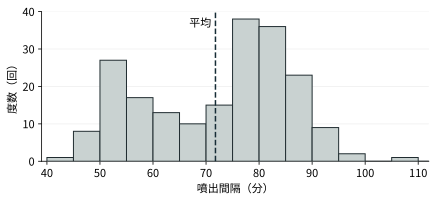
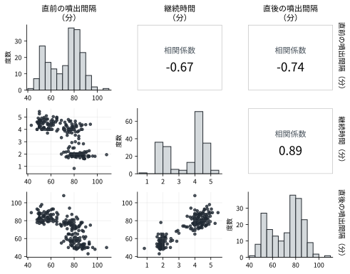
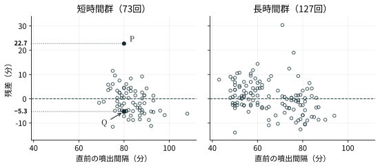
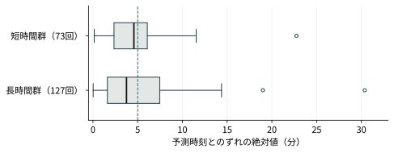
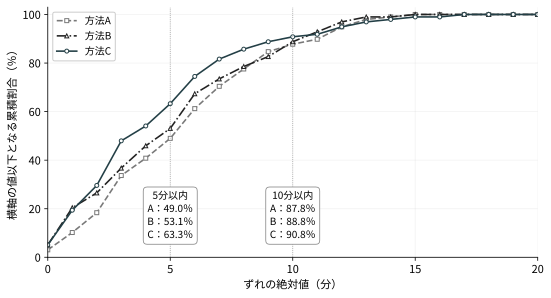

高校生のKさんが住む地域には，湯がときどき噴き出す間欠泉があり，観光客が訪れる。Kさんは，地域の案内所の人と，次の噴出が見られる時間帯を掲示する方法を考えることにした。そこで，この間欠泉を続けて観測した過去の記録を分析した。
問1 次の問い（a・b）に答えよ。
ある噴出が始まってから，次の噴出が始まるまでの時間を「噴出間隔」とする。図1は，ある期間に観測した200回の噴出間隔の分布を示したヒストグラムである。

a噴出間隔の平均は約72分だった。噴出の開始のたびに「次は約72分後」と案内する方法について，図1からは， ア と考えられる。 空欄 ア に入れるのに最も適当なものを，次の⓪〜③のうちから一つ選べ。
次の噴出までの間隔を見積もる手掛かりを探すため，Kさんは噴出の開始時刻と終了時刻に着目した。表1は，連続する3回の開始・終了時刻の例である。時間の関係が分かるように，1回目の開始を9時00分00秒として表している。
| 観測順 | 開始時刻 | 終了時刻 |
|---|---|---|
| 1回目 | 9時00分00秒 | 9時04分01秒 |
| 2回目 | 10時11分00秒 | 10時13分09秒 |
| 3回目 | 11時08分00秒 | 11時12分23秒 |
一つの噴出を今回の噴出とし，前の噴出の開始から今回の開始までを「直前の噴出間隔」，今回の開始から終了までを「継続時間」，今回の開始から次の噴出の開始までを「直後の噴出間隔」と呼ぶ。
b表1の2回目について，直前の噴出間隔，継続時間，直後の噴出間隔の組合せとして最も適当なものを，次の⓪〜③のうちから一つ選べ。 イ
| 選択肢 | 直前の噴出間隔 | 継続時間 | 直後の噴出間隔 |
|---|---|---|---|
| ⓪ | 71分 | 2分9秒 | 57分 |
| ① | 57分 | 2分9秒 | 71分 |
| ② | 71分 | 4分1秒 | 57分 |
| ③ | 57分 | 4分1秒 | 71分 |
問2 次の文章を読み，空欄 ウ ・ エ に入れるのに最も適当なものを，それぞれの選択肢のうちから一つずつ選べ。
表1の2回目と同じように，各噴出に直前の噴出間隔，継続時間，直後の噴出間隔を対応付けた。継続時間には，おおよその長さで記録された値も含まれる。図2は，この200回について三つの項目の関係を示した散布図行列である。対角線上はヒストグラム，その左下は列の項目を横軸，行の項目を縦軸とした散布図である。1点は1回の噴出を表し，右上には対応する相関係数を示した。

図2の最下行の二つの散布図を比べる。直後の噴出間隔が短い側に集まる点では，長い側に集まる点に比べ，おおむね ウ 。
図2では，継続時間も，2分付近と4分付近にまとまっている。そこで，継続時間が3分未満の回を「短時間群」，3分以上の回を「長時間群」と呼び，表2に直後の噴出間隔との対応をまとめた。
| 群 | 直後の噴出間隔が70分未満 | 直後の噴出間隔が70分以上 | 計 |
|---|---|---|---|
| 短時間群 | 72 | 1 | 73 |
| 長時間群 | 4 | 123 | 127 |
| 計 | 76 | 124 | 200 |
次の噴出までの時間を大まかに見積もるため，「短時間群なら直後の噴出間隔は70分未満，長時間群なら70分以上」と予測した。表2から，予測に合わない回の割合を，各群の回数を分母として求めると， エ 。
問3 次の文章を読み，空欄 オ ・ カ に入れるのに最も適当なものを，それぞれの選択肢のうちから一つずつ選べ。また，後の問いに答えよ。
Kさんは，短時間群と長時間群のそれぞれで，直後の噴出間隔がほかの二項目とどのように関係するかを調べた。表3は，それぞれの群と全200回について，直後の噴出間隔と各項目との相関係数を示したものである。
| 集計した回 | 継続時間との相関係数 | 直前の噴出間隔との相関係数 |
|---|---|---|
| 全200回 | 0.89 | −0.74 |
| 短時間群 | 0.33 | −0.37 |
| 長時間群 | 0.36 | −0.57 |
表3では，継続時間で短時間群と長時間群に分けて求めた相関係数は，どちらの項目についても，全200回で求めた相関係数より絶対値が小さくなっている。この違いについては， オ と考えられる。
次に，Kさんは，直後の噴出間隔を具体的に予測するため，二つの方法を考えた。一つは短時間群・長時間群それぞれの平均を用いる「方法A」，もう一つは継続時間から回帰直線で予測する「方法B」である。
特に，方法Bによる予測を詳しく調べることにした。方法Bでは200回全体に回帰直線を当てはめ，次の式で予測値を求める。時間の単位は分である。
方法Bによる予測のずれを調べるため，各回について次の式で「残差」を求めた。
例えば，次の噴出が予測した時刻より5分早く始まった場合，残差は−5分となる。図3は，横軸を直前の噴出間隔，縦軸を方法Bの残差とした散布図である。短時間群のPとQでは，継続時間がどちらも1分52秒，直前の噴出間隔がどちらも80分だった。PとQから縦軸へ点線を引き，その位置に残差を小数第1位まで示している。

予測時刻からのずれの大きさを比べるため，残差の絶対値の分布を図4の箱ひげ図に表した。○は外れ値を表す。

図4から，方法Bによる予測について， カ と読み取れる。
図3のPとQは，継続時間と直前の噴出間隔がともに等しい二つの記録である。この二項目を使って予測する方法について，PとQから考えられることとして最も適当なものを，次の⓪〜③のうちから一つ選べ。 キ
問4 次の文章を読み，後の問いに答えよ。
Kさんは，表3を手掛かりに，短時間群・長時間群それぞれについて，直前の噴出間隔から直後の噴出間隔を予測する回帰直線を求めた。この方法を「方法C」とする。表4に，方法A・Bと合わせた三つの方法をまとめた。いずれも同じ200回の記録から作成したものである。どの方法も，予測するのは今回の開始から次の開始までの時間である。以下では，予測値を1分単位に四捨五入して用いる。
| 方法 | 予測値または計算式（時間の単位は分） |
|---|---|
| A：群ごとの平均 | 短時間群なら56，長時間群なら81 |
| B：継続時間を使う直線 | 35.67 ＋ 10.49 × 継続時間 |
| C：群ごとに直前の間隔を使う直線 | 短時間群：83.83 − 0.34 × 直前の噴出間隔 長時間群：101.13 − 0.31 × 直前の噴出間隔 |
案内に含められる回の割合を比べるため，三つの方法を作成した200回とは別の98回に，各方法を適用した。その結果を図5に示す。図5の縦軸は，実際の開始時刻と予測時刻とのずれの絶対値が，横軸の値以下だった回の割合を表す。例えば，横軸10分で縦軸が90％なら，約9割の回でずれの絶対値が10分以内だったことを表す。横軸の値は1分刻みで集計し，点を直線で結んだ。

図5に示した三つの方法の予測結果の比較として最も適当なものを，次の⓪〜③のうちから一つ選べ。 ク
案内所では，方法Cを使い，予測時刻の前後10分を次の噴出が見られる時間帯として掲示することにした。ただし，この時間帯を外れる場合もあることを伝える。
ある噴出が10時00分に始まり，4分間続いた。直前の噴出間隔は80分だった。この噴出の終了後，採用した方法と幅を使って掲示する時間帯として最も適当なものを，次の⓪〜③のうちから一つ選べ。 ケ
出典：Azzalini・Bowmanの間欠泉観測記録（RのMASSパッケージ収録）を加工して作成。もとの研究，観測期間，集計方法は解答・解説に示す。